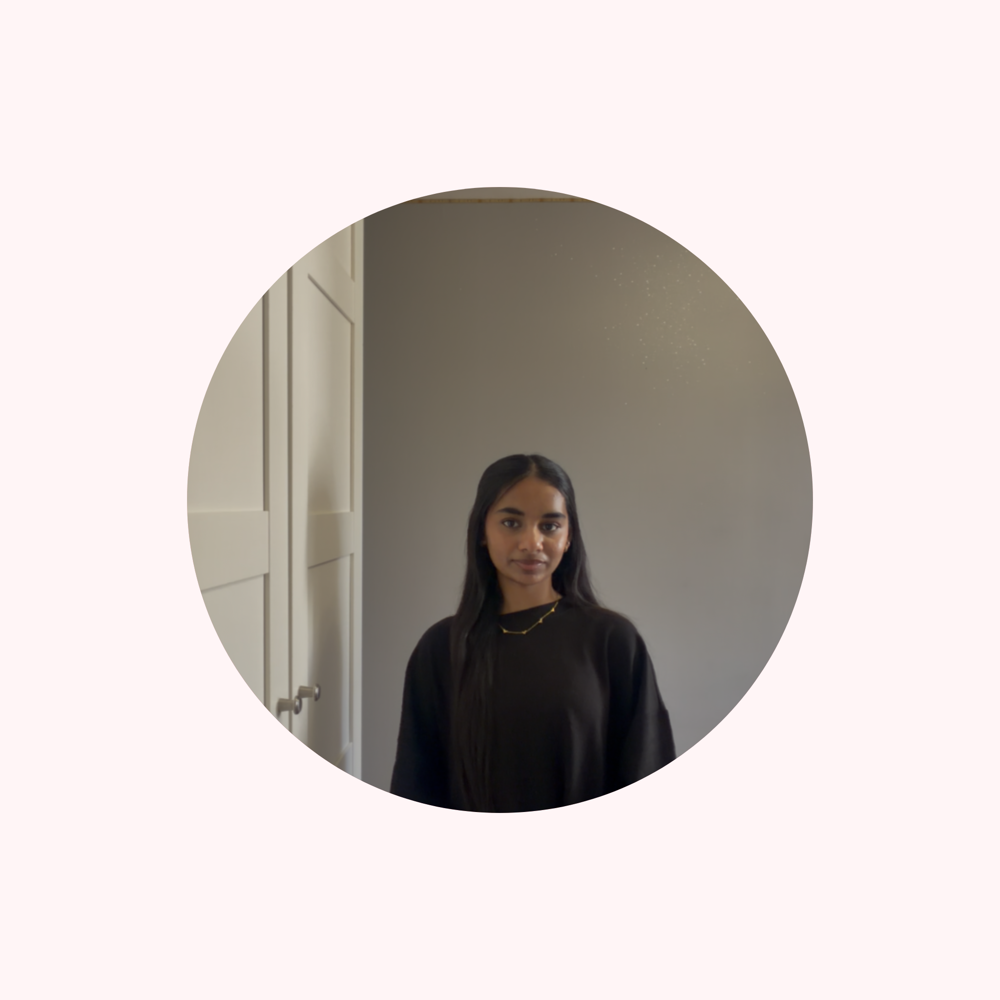
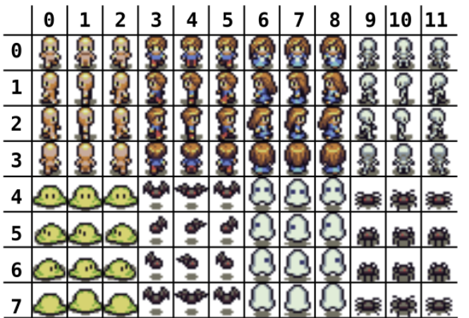
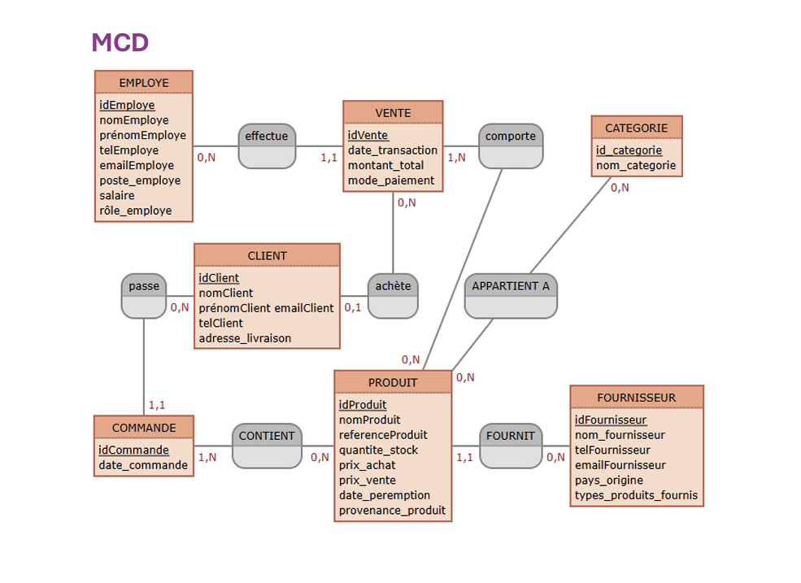

Actuellement étudiante en première année de BUT Informatique à l'Université Paris-Saclay, je suis passionnée par les nouvelles technologies et le développement. J'aime concevoir des solutions et consolider mes compétences à travers des projets académiques et personnels.
Mon objectif est de me spécialiser dans le domaine de la cybersécurité afin de contribuer activement à la protection des systèmes informatiques, à la sécurisation des infrastructures et à la confidentialité des données.
🏸 SPORT
Badminton : Pratique en loisir au sein de l’association sportive du lycée.
🌍 VOYAGES
Suisse, Italie, États-Unis, Turquie, Belgique, Monaco, Inde, Émirats Arabe Unis... Ouverture sur le monde à travers des séjours réguliers.
🎨 PASSIONS

Création d'un site web d'agence de voyage fictive.

Jeu 2D développé en binôme avec SDL.

Conception d'une base de données relationnelle SQL.